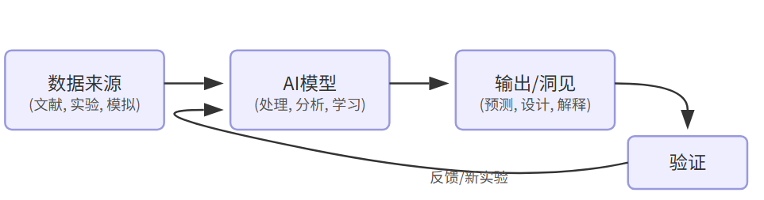
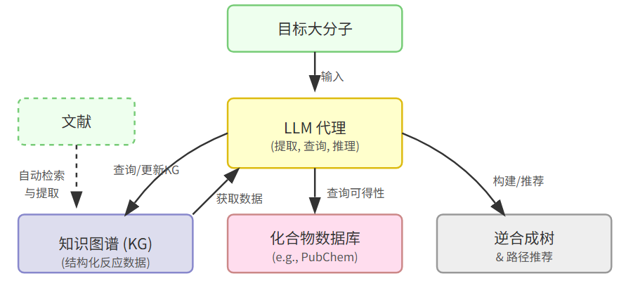
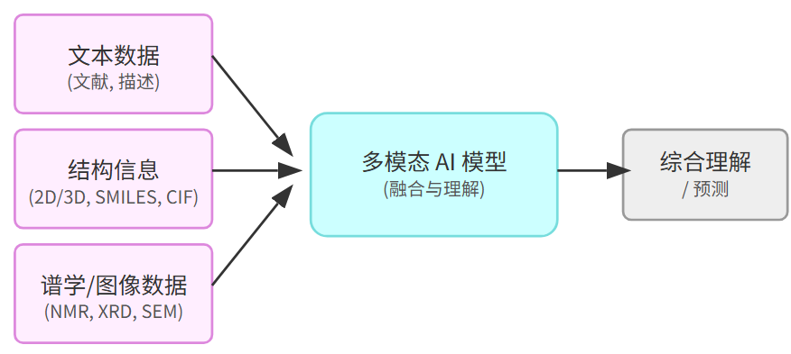

化学与材料科学的“数据宇宙”与AI罗盘
我们正处在一个化学与材料科学知识以前所未有的速度积累的时代。从金属有机框架（MOF）到高性能聚合物，从复杂的生物大分子到精密的纳米结构，新的物质及其性能以前所未有的速度被发现和报道。剑桥结构数据库中MOF结构突破十万种，材料科学文献总量超过六百万篇 参考：[LLaMat研究背景] —— 这构成了一个浩瀚的“数据宇宙”。然而，这片宇宙也充满了挑战：海量非结构化文献、复杂的多尺度关联、难以捉摸的合成路径、以及实验与理论之间的鸿沟，使得传统的研究范式日益显得力不从心。如何在数据洪流中精准导航，加速从知识到创新材料的转化？人工智能，特别是近年来飞速发展的大型语言模型（LLM）及其相关技术，正成为我们探索这片未知宇宙的强大“罗盘”。本文旨在回顾AI在化学与材料科学领域已取得的关键进展，并展望其未来发展的机遇与挑战，期望能为领域内的研究者提供有价值的技术洞见与思考。

AI驱动的化学与材料研究工作流示意图
回顾：AI已在化学与材料领域点亮哪些灯塔？
近年来，AI技术不再仅仅是计算机科学领域的宠儿，它正以前所未有的深度和广度渗透到化学与材料科学的核心研究环节。回顾过去几年的探索，我们可以看到AI在以下几个关键方面取得了显著进展：
- 冲破知识壁垒：从文献挖掘到知识构建科学文献是人类知识传承的基石，但其非结构化特性却构成了巨大的信息提取障碍。传统方法耗时费力，难以应对指数级增长的文献量。AI，特别是LLM，为此带来了突破。研究者们开发了创新的方法来“阅读理解”海量科学文献。例如，一项针对240万篇聚合物文献的研究展示了结合传统自然语言处理（NLP）技术（如命名实体识别，NER）与LLM（如GPT-3.5）的混合框架的威力 参考：[Communications Materials | LLM从聚合物文献中提取数据]。通过分阶段过滤（启发式+NER筛选）和模型协同（NER负责标准化和快速过滤，LLM负责理解复杂语义和关系），该框架从文献全文中提取的聚合物性质数据量，远超以往仅依赖摘要或单一模型的方法，且能捕捉到更全面的数据分布，包括传统方法可能忽略的极端值。这种“扬长避短”的混合策略，不仅提升了效率，也在成本和性能间取得了较好的平衡。除此之外，AI不仅能提取信息，还能结构化知识。针对大分子逆合成规划的挑战（如聚合物命名复杂多变、缺乏大型反应数据库），复旦大学的研究团队提出了一种结合LLM和知识图谱（KG）的自动化代理系统 参考：[LLM+知识图谱|材料化学领域的大分子逆合成规划]。LLM负责从文献中精准识别和提取化学物质名称及反应信息，而知识图谱则将这些非结构化数据转化为结构化知识，解决了跨文献实体对齐（命名统一）的问题，并支持动态更新，有效克服了LLM知识更新滞后的局限。这种结构化的知识存储被认为在需要高精度和可验证性的科学任务中，可能优于基于向量检索的RAG。这标志着AI正从简单的信息抽取走向更深层次的知识构建与管理。

LLM结合知识图谱进行逆合成规划
- 连接语言与结构：多模态理解的兴起化学与材料科学的研究对象本质上是三维的原子和分子结构。仅仅依赖文本描述（如SMILES字符串或化学名称）往往不足以完全捕捉其复杂性。因此，能够同时理解自然语言和原子/分子结构的多模态AI模型应运而生。MatterChat便是一个典型的例子，它首次尝试将精确的原子结构信息（通过图神经网络CHGNet编码）与LLM的语言处理能力结合，用于理解材料科学问题 参考：[MatterChat研究]。其创新的桥接模型（Q-Former like）有效解决了跨模态（原子结构 vs. 语言）表示对齐的难题，使得模型不仅能预测材料属性，还能提供科学解释和合成建议，在多项任务上超越了单纯的LLM和物理机器学习模型。类似地Mol-LLaMA致力于构建通用的“分子助手”，它认识到单一表示的局限性，创新地设计了融合2D（键连通性）和3D（空间构象）分子信息的混合模块，并通过精心设计的指令数据集（覆盖结构描述、结构-特征关系、综合对话）进行训练 参考：[Mol-LLaMA研究]。这使得模型能更全面地理解分子的基本特征及其内在联系（结构->化学性质->生物学性质），在分子通用理解能力上甚至超越了GPT-4o。而在谱学分析领域，NMRNet则展示了利用几何深度学习（SE(3) Transformer）处理三维原子环境信息的强大能力 参考：[NMRNet研究]。该框架通过大规模自监督预训练学习通用的原子环境表示，再针对性地微调，实现了对液态和固态核磁共振（NMR）化学位移的统一、高精度预测。其保持旋转和平移不变性的架构设计，对于精确描述分子和晶体的局部环境至关重要，甚至使其能够区分细微的立体化学差异。这些工作共同指向一个趋势：AI正朝着能够整合文本、二维/三维结构、谱图等多模态信息的方向发展，以更接近物理现实的方式理解化学与材料世界。

多模态AI理解化学/材料
- 超越预测：迈向推理、解释与生成AI在科学领域的价值远不止于预测。如何让AI像科学家一样进行推理、解释现象、甚至创造新事物，是更深层次的追求。针对机器学习模型的“黑盒”问题，XpertAI框架巧妙地结合了可解释AI（XAI）、LLM和基于文献的检索增强生成（RAG）参考：[XpertAI研究]。它首先用ML/XAI找出影响性质的关键分子特征（“What”），然后通过RAG从科学文献中查找这些特征为何重要的证据（“Why”），最后由LLM生成带引用的自然语言解释。这种将数据驱动发现与人类既有知识（文献）相结合的方法，显著提高了模型解释的可信度和科学家的接受度。在科学推理方面，SCIAGENT探索了“工具增强”的路径 参考：[SCIAGENT研究]。它模仿人类科学家使用计算工具（如函数库、模拟软件）的模式，让LLM学习规划解题步骤、从工具集中检索并调用合适的工具、执行代码得到答案。这种方法不仅降低了对模型“全知全能”的要求，更重要的是赋予了模型解决复杂计算问题的能力，尤其是在需要结合领域知识和数学计算的科学任务中，显示出巨大潜力。更需要关注的是AI在“创造”方面的能力。LLaMat项目不仅训练模型分析文献，还专门开发了LLaMat-CIF变体，通过持续预训练和指令微调，使其能够生成化学有效且具有热力学稳定性的晶体结构 参考：[LLaMat研究]。类似地，在框架化学领域，研究者利用微调后的LLM学习分子编辑规则，成功生成了新的MOF连接体变体 参考：[Nature Reviews Materials | LLM在框架化学中的应用]。结合KG的逆合成规划系统也能推荐全新的合成路径 参考：[LLM+知识图谱|材料化学领域的大分子逆合成规划]。这些进展表明，AI正从分析现有数据，逐步走向设计和生成新的分子与材料。
- 量体裁衣：领域适应与模型专业化通用大模型虽然强大，但在专业领域的深度和精度上往往存在不足。因此，针对化学与材料科学的“领域适应”成为关键策略。DARWIN 1.5是这一方向的代表作，它通过两阶段训练策略——科学问答（QA）微调注入大量文献知识，多任务学习（MTL）统一处理多种材料属性预测任务——将开源的LLaMA-7B模型打造成强大的材料科学专用模型 [参考：DARWIN 1.5研究]。其核心思想是用自然语言作为统一接口，避免了复杂的特征工程，并在多项任务中超越了传统机器学习方法甚至通用大模型。LLaMat的研究则更深入地探讨了领域适应的细节 参考：[LLaMat研究]。它通过构建包含文献、通用文本、晶体文件和社区话语的庞大领域语料库（R2CID），对LLaMA模型进行持续预训练（CPT），再结合多阶段指令微调（IFT），开发出专用于文献分析（LLaMat-Chat）和晶体生成（LLaMat-CIF）的模型。这项工作不仅证明了深度领域适应的有效性，还意外发现了“适应刚性”（Adaptation Rigidity）现象：即基础能力更强的LLaMA-3在某些领域适应任务上反而不如LLaMA-2。这一反直觉的发现提示我们，在专业领域适应中，模型并非越大越好，过度训练的大模型可能在适应新领域知识时反而缺乏灵活性。与此同时，对现有模型能力的系统性评估也至关重要。MaScQA数据集的构建，首次为定量评估LLMs在材料科学本科水平知识上的掌握程度提供了标准化基准 参考：[MaScQA研究]。评估结果（如GPT-4表现最佳但仍主要犯概念性错误，CoT提示效果不佳等）揭示了当前通用LLM在专业领域的知识短板和能力边界，为未来的模型改进指明了方向。
表1：AI在化学与材料科学中的应用方向与代表性研究
| 应用方向 | 核心挑战 | AI解决方案与代表性研究 | 关键技术/概念 |
|---|---|---|---|
| 文献挖掘与知识构建 | 海量非结构化文本，命名复杂，信息分散 | 混合框架 (NER+LLM) 进行大规模全文提取 ; LLM+知识图谱 进行结构化知识存储与实体对齐; 领域适应LLM用于信息提取 | NER, LLM, 少样本学习, 知识图谱 (KG), 实体对齐, 持续预训练 (CPT), 指令微调 (IFT) |
| 结构与多模态理解 | 超越文本，理解原子/分子/晶体结构及其与性质关系 | MatterChat (结构+文本); Mol-LLaMA (2D+3D+文本); NMRNet (3D几何+谱图预测) | 图神经网络 (GNN), 几何深度学习 (如SE(3) Transformer), 多模态融合, 桥接模型 |
| 推理、解释与生成 | 黑盒问题，复杂计算，逆向设计，合成规划 | XpertAI (XAI+LLM+RAG); SCIAGENT (工具增强推理); LLaMat-CIF (晶体生成); KG+LLM (大分子逆合成规划); LLM辅助MOF连接体设计 | XAI, RAG, 工具增强, 生成模型, 逆合成算法 (MBRPS), LLM微调 |
| 领域适应与评估 | 通用模型专业知识不足，性能评估标准缺乏 | DARWIN 1.5 (QA微调+多任务学习); LLaMat (CPT+IFT+任务微调); MaScQA (基准数据集构建) | 领域适应, QA微调, 多任务学习 (MTL), 持续预训练 (CPT), 指令微调 (IFT), 基准测试 |
前瞻：AI将引领化学与材料科学走向何方？
回顾过往，AI已经在化学与材料领域展现出巨大的潜力。展望未来，我们有理由相信，AI将继续扮演关键角色，推动该领域的研究范式发生更深刻的变革。以下几个方向值得我们重点关注：
- 更深度的智能融合与自动化： 未来的AI系统将不再是孤立的工具，而是深度融入科研工作流。我们可以期待LLM作为“智能调度中心”，连接文献数据库、模拟计算软件（DFT、MD）、高通量虚拟筛选平台、乃至自动化实验机器人（如自动化合成、表征平台），形成“设计-模拟-合成-测试”的自动化闭环。SCIAGENT的工具增强思想和KG逆合成系统的模块化设计，都预示了这一趋势。
- 全息化的多模态表征学习： 对物质的理解需要整合来自各个维度的数据。未来的AI模型需要具备更强的多模态融合能力，能够同时理解和关联文本描述、化学结构（1D/2D/3D）、实验图像（SEM/TEM）、各种谱图（NMR, IR, Raman, XRD, Mass等）以及过程数据。这将使AI能够进行更精准的结构解析、性能预测和机理推断。MatterChat、Mol-LLaMA和NMRNet等工作是这一方向的早期探索。
- 迈向因果推断与科学原理理解： 当前AI在发现关联性方面表现出色，但理解深层因果关系和基本物理化学原理仍是挑战。未来的研究需要让AI不仅知道“是什么”（What）和“怎么样”（How），更能理解“为什么”（Why）。这可能需要结合知识图谱、符号推理、以及新的模型架构，让AI能够进行更鲁棒的科学假设生成与验证。XpertAI的解释性探索和MaScQA揭示的概念性错误短板，都凸显了这一方向的重要性。
- 可信赖AI：解释性、鲁棒性与数据质量： 科学研究对结果的可靠性要求极高。因此，提升AI模型的可解释性（XAI）、鲁棒性（如处理噪声数据、对抗模型幻觉）至关重要。同时，高质量、无偏见的数据是AI成功的基石。正如LLaMat研究中提到的，文献数据普遍存在的“成功偏见”（缺乏失败实验数据）可能误导模型，未来需要构建更全面、包含“黑暗数据”的数据库。
- AI驱动的逆向设计与发现： 生成模型将是AI在化学与材料领域最具颠覆性的应用之一。未来AI不仅能预测已知材料的性质，更能根据目标性能直接设计出全新的分子、聚合物或晶体结构。这需要更强大的生成算法、更精确的性能预测模型以及对合成可行性的评估能力。LLaMat-CIF和KG逆合成系统等工作已经展示了这方面的初步潜力。
- 开放、高效与自适应的AI生态： 随着“适应刚性”等现象的发现，未来可能不再是“越大越好”的单一范式。开发更高效、更易于部署、针对特定领域“可适应性”更强的模型（可能是中小型模型）将变得更加重要。开源模型（如DARWIN 1.5, LLaMat）和开放基准（如MaScQA）将继续推动社区发展，降低AI技术在科研中的应用门槛。
结语：在确定性与可能性之间，用AI之光照亮探索之路
真正的科学发现，往往诞生于已知与未知的交界处，在确定性的规律与无限的可能性之间。AI为我们提供了前所未有的计算能力和模式识别能力，但最终的洞察、批判性思维和突破性的创想，仍需源自人类科学家的智慧与直觉。未来的化学与材料科学，将是一个人类智慧与人工智能深度协作、共生共荣的新时代。